The tables, studies and protocol that the main page states in one line each.
Which agent, which model, how much thinking
Eight configurations, five trials each. Three of them do badly, and they stay in the table.
The comparison uses a smaller assembly task: four parts forming two pairs, a hexagonal ring over a short post and a circular sleeve over a stepped cylinder, learned from one human demonstration. Every configuration receives the same task references, the same robot interface and the same time and request budgets. Success requires both pairs to remain assembled after release and arm withdrawal.
Agent, model and thinking effort on two pair assembly. GPT-6 Astra appears at three thinking efforts; the other models use their high setting.
Scroll the table sideways for the rest of the columns.
Reading the table
GPT-6 Astra succeeds in every trial at all three thinking efforts, in about nine to ten minutes and USD 4.09 to 4.79 per success, so on this task more thinking effort buys little.
GPT-5.6 Sol also succeeds in every trial, more slowly and more cheaply than Astra.
Within Claude Code, Fable 5.1 succeeds less often than Opus 5 and uses fewer tokens on its successful trials, yet takes more time and costs more per success.
Comparisons across Codex CLI and Claude Code are comparisons of whole systems, not of models alone.
The single Terra figure is one trial, and the time, token and cost cells for that row have no spread because there is only one successful trial to average.
Table view
Table 2, per trial: the data plotted in the figure above.
Means, minima and maxima are over successful trials only. GPT-5.6 Luna has no successful trial, and seven failed trials have no usable resource record.
Source: the pinned per-trial two pair assembly records behind Table 2.
One mark per trial for each of the eight configurations, successes filled and failures hollow, with the arm shown beneath each mark. Astra and Opus 5 trials are pooled across the left and right arms.
GPT-6 Astra, high effort
Two pair assembly, trial 5 of 5 (5/5). GPT-6 Astra at high effort in Codex CLI, left arm. 7.9 min real at 15x. The other arm runs a separate trial outside this crop.
Task
Two pair assembly
Trial
5 of 5
Outcome
success
Model
GPT-6 Astra (high)
Harness
Codex CLI
Arm
left
Speed
15x
Real time
7.9 min real
Clip
31 s
GPT-5.6 Sol
Two pair assembly, trial 5 of 5 (5/5). GPT-5.6 Sol at high effort in Codex CLI, left arm. 9.1 min real at 16x. Nothing else is running: four parts, one arm.
Task
Two pair assembly
Trial
5 of 5
Outcome
success
Model
GPT-5.6 Sol (high)
Harness
Codex CLI
Arm
left
Speed
16x
Real time
9.1 min real
Clip
32 s
Claude Opus 5
Two pair assembly, trial 3 of 5 (5/5). Claude Opus 5 at high effort in Claude Code, left arm. 14.4 min real at 25x. No failed commands; its report notes that the steep overhead view made the upright posts look like they were lying down, and that it checked with wrist depth.
Task
Two pair assembly
Trial
3 of 5
Outcome
success
Model
Claude Opus 5 (high)
Harness
Claude Code
Arm
left
Speed
25x
Real time
14.4 min real, 12.8 min shown
Clip
31 s
The other arm on the rail sometimes runs a separate trial at the same time. Where that is visible in a clip, the caption says so and the frame is cropped to the arm being discussed.
What these numbers rest on
Time, token and cost cells are computed from the per-trial usage records and are checked by the build against the paper at full precision. The Success column is different. The resource rows can be recomputed from data files; the denominators cannot all be. All five GPT-5.6 Luna sessions and all five Claude Fable 5.1 sessions are now on record, but three of the Luna sessions ended without a final report, through a timeout or an abort, and Fable trial 5 has no report either. Those outcomes are recorded by the authors rather than derived from a usage file, and they are listed, trial by trial, in the denominators file published with the data below. The build checks the Success column against that file, so an unreviewed change to a denominator still fails the build.
Reusing experience
Every trial so far started from nothing. These three studies let the agent keep what it learned. Experience is ordinary files: measurements, procedures, corrections and working scripts, written at the end of one execution and read at the start of the next. Each execution still begins with a fresh agent context, so the only thing that carries over is what was written down.
Two comparisons on this page are two separate clips, not one composed video: ring cycle 1 beside ring cycle 4, and the same model with and without the transferred store. Each pair starts at the same task second and runs at the same speed, so the shorter run simply finishes first. Play them together; each still states its own trial and real elapsed time.
One arm takes a ridged ring off its base and puts it back, five times over, in a single continuous session with GPT-6 Astra at high thinking effort. Each cycle starts a new agent process that reads the previous checkpoint and updates the object poses from what it can see now. The first cycle has nothing to read: its first insertion stalls, the agent lifts the part safely, measures an offset of about 9 mm between the centre of the grasped ring and the tool, and corrects for it. Later cycles reuse that corrected alignment procedure and check it against current observations.
Ring, cycle 1: 870 s
Cycle 1 of 5, with nothing in the experience store. The first insertion stalls; the agent measures a 9 mm grasp offset and retries.
Full caption
Ring disassembly and reassembly, cycle 1 of 5, with nothing in the experience store. GPT-6 Astra high, Codex CLI, right arm. 870 s of real time at 16x. The first insertion stalls; the agent measures a 9 mm grasp offset and retries.
Task
Ring disassembly and reassembly, cycle 1
Trial
1 of 5
Outcome
success after one retry
Model
GPT-6 Astra (high)
Harness
Codex CLI
Arm
right
Speed
16x
Real time
14.5 min real
Clip
54 s
Ring, cycle 4: 372 s
The fourth cycle of the same continuous session, run by a fresh agent that reads what the earlier cycles wrote down. No retries.
Full caption
The fourth cycle of the same continuous session, run by a fresh agent that reads what the earlier cycles wrote down. 372 s of real time at the same 16x, so the clip ends while the other is still going. No retries.
Task
Ring disassembly and reassembly, cycle 4
Trial
4 of 5
Outcome
success
Model
GPT-6 Astra (high)
Harness
Codex CLI
Arm
right
Speed
16x
Real time
6.2 min real
Clip
23 s
Seconds per cycle
Seconds per cycle
Cycle
Task
Handoff
Experience writing
Total
Motion wait
Retries
1
870.3
0.0
119.4
989.7
127.2
1
2
408.8
170.2
114.1
693.1
91.6
0
3
372.3
33.3
117.6
523.1
92.5
0
4
372.2
45.9
112.2
530.3
92.7
0
5
393.2
29.0
68.5
490.7
91.7
0
Scroll the table sideways for the rest of the columns.
Task time drops after the first cycle and stays near the lower level. Across the whole sequence, task intervals account for 40.3 minutes, experience writing for 8.9 minutes and handoffs for 4.6 minutes, with 8.3 minutes of motion command wait inside those intervals. Handoff covers the previous agent finishing its report, exiting, and the next agent starting up and reading.
These are five dependent repetitions in one session, with no matched control in which every cycle starts from empty experience. They cannot separate the effect of the saved experience from anything else that changes between cycles.
Table view
Reusing experience: ring disassembly and reassembly — seconds per execution.
#
Task execution
Writing experience
Handoff to the next session
Total
1
870.3
119.4
0.0
989.7
2
408.8
114.1
170.2
693.1
3
372.3
117.6
33.3
523.1
4
372.2
112.2
45.9
530.3
5
393.2
68.5
29.0
490.7
All values in seconds. Rows sum to the total.
Source: the paper's ring experience timing export, five recorded cycles.
Time per ring cycle, split into task time, handoff and experience writing.
Five trials, GPT-6 Astra at high thinking effort, left arm, each trial a fresh agent reading the accumulated experience and script snapshots from the trials before it. Totals were 559, 469, 469, 498 and 529 seconds. Task time falls and then comes back close to where it began, while the time spent writing experience gets shorter. The benefit of reuse depends on the task.
Success here is the agent's own assessment from its recorded visual evidence, not a separate human review, and the timing boundaries differ from the ring study: these are separate sessions, so the gaps between them are excluded.
Table view
Reusing experience: two pair assembly — seconds per execution.
#
Task execution
Writing experience
Other within-trial overhead
Total
1
471.0
81.2
6.8
559.0
2
387.0
66.0
16.0
469.0
3
408.0
53.3
7.7
469.0
4
425.0
59.3
13.7
498.0
5
475.0
48.7
5.3
529.0
All values in seconds. Rows sum to the total.
Source: the paper's two pair assembly experience timing export, five recorded executions.
The same idea on two pair assembly: five consecutive trials, each a fresh agent reading what the trials before it wrote. Task time falls and then returns close to where it began, while the time spent writing experience gets shorter.
GPT-6 Astra ran the two pair assembly task five times and saved geometry, procedures, corrections and scripts. GPT-5.6 Terra, at high thinking effort, then received that collection with read access only, frozen, unchanged between trials. The comparison is Terra with nothing against Terra reading the Astra collection, with the same task references, the same interface and the same budgets on both sides.
Collection completed 11 September 2026, after the preprint snapshot. The preprint reports this study from an earlier, smaller run, 1 of 5 against 2 of 5, in its text and in its figure. The numbers below are the completed collection and supersede both.
Handing experience to a smaller model
Condition
Success
Time (min)
Tokens (k)
Cost (USD)
GPT-5.6 Terra, empty experience
1/5
19.0
6282
1.98
GPT-5.6 Terra, reading the Astra collection
4/5
12.5 [10.1, 16.9]
5563 [4814, 5865]
1.64 [1.56, 1.74]
GPT-6 Astra, the five runs that built the collection
5/5
7.6 [6.5, 9.1]
2495 [2240, 2827]
3.79 [3.45, 4.39]
Scroll the table sideways for the rest of the columns.
Means over successful trials, with the observed minimum and maximum beneath, the same accounting as the model comparison above. The empty-experience figure is the one successful Terra trial from that table, so it has no spread.
The 5 of 5 in the third row is one of the four Success counts on this page that rest on the authors' own record. All five runs are on file with full time, token and cost accounting, but the operator verdict column of that batch record was left blank, so the count comes from the single decision of 11 September 2026, in which Yang Lin, the author who ran the trials, confirmed all four of these counts, rather than from the record. The denominators file below states this, trial by trial.
No experience: 19.0 min
Two pair assembly, GPT-5.6 Terra at high effort in Codex CLI, left arm, empty experience store: trial 4 of 5 and the only success in that row (1/5). 19.0 min real at 20x, with several settle-miss recoveries. Shown from task second 90 at the same speed as the clip beside it.
Task
Two pair assembly, empty experience
Trial
4 of 5
Outcome
success
Model
GPT-5.6 Terra (high)
Harness
Codex CLI
Arm
left
Speed
20x
Real time
19.0 min real, 17.7 min shown
Clip
53 s
Reading a frozen experience store: 11.2 min
The same task and the same model, now reading a frozen experience store written by GPT-6 Astra and never written back to: trial 5 of 5, 4/5 successful, 11.2 min real. Same 20x and the same task second 90 start, so the clip simply ends sooner. Collection completed 11 September 2026, after the preprint snapshot.
Task
Two pair assembly, frozen experience from GPT-6 Astra
Trial
5 of 5
Outcome
success
Model
GPT-5.6 Terra (high)
Harness
Codex CLI
Arm
left
Speed
20x
Real time
11.2 min real, 9.5 min shown
Clip
28 s
With the collection in front of it, Terra succeeds in four trials instead of one, finishes faster, and uses fewer tokens. It does not reach the model that wrote the collection: Astra still finished in 7.6 minutes on average. Cost moves the other way, because Terra is the cheaper model per token.
Five trials per condition. The conclusion rests on very few successful runs.
The collection is frozen. Terra can read it but cannot add to it, so this measures transfer, not further accumulation.
Two runs of this study were discarded because of infrastructure problems and are not counted anywhere on this page or in the published data.
Table view
Experience transfer, per trial: the data plotted in the figure above.
GPT-5.6 Terra, reading a frozen GPT-6 Astra experience store
4/5
12.5 [10.1, 16.9]
5 563 [4 814, 5 865]
1.64 [1.56, 1.74]
10.1, 11.2, 11.7, 16.9, 19.6 (failed)
GPT-6 Astra, building the experience store
5/5
7.6 [6.5, 9.1]
2 495 [2 240, 2 827]
3.79 [3.45, 4.39]
6.5, 7.0, 7.3, 8.2, 9.1
Means, minima and maxima are over successful trials only. The third row is a different model, shown for reference.
Source: the pinned per-trial records of the two pair assembly experience transfer runs; collection completed 11 September 2026.
Completion time and token use for GPT-5.6 Terra with and without the Astra collection, over successful trials, from the collection completed 11 September 2026.
In the agent's own words
One failed assembly attempt preserved (cap30 failure): aligning TCP directly to receiver led to visible lateral offset and SETTLE_MISS at commanded z .028 (actual .0308). Fresh depth cap29 showed effective ring +.009 x from TCP; lifted safely .065, closed failure, started retry, corrected x then seated successfully. No hardware fault. Initial high downward observation IK candidates rejected without motion; successful observation is (.23,0,.15). Ordinary joint tolerance can allow 5–8 mm TCP error; final approaches use Cartesian. Repeated deltas accumulated x drift; use absolute measured targets. Ring moved/effective pose changed after release; remeasure. No force measurements.
What a fresh agent actually reads: a sanitized excerpt of the saved experience, in the agent's own words. Saved after cycle 1 of the ring study, from the corrections field of the experience store. Verbatim: the field carries no path, no name and no identifier, so nothing was cut.
Where the time goes
The robot is stationary for most of a trial. The paper rebuilds the timeline of all 37 Table 1 trials by matching robot session records to the timestamped agent traces, and reports 4882 paired tool calls in all, then splits the elapsed time into categories. That count and the ones in the programs section below come from the paper's own appendix rather than from a file published here. The means below cover every trial in each configuration, failures included, so they are larger than the completion times in the results table, which cover successful trials only and stop at final verification.
Where the time goes Mean minutes per trial.
Task
Trials
Total
Visual loop
Remaining response
Local tools
Action service
Check
Report
Four pair assembly
5
62.0
30.6
16.1
0.4
13.6
0.5
0.8
Pyramid
5
23.7
9.4
3.7
0.2
8.5
1.0
0.9
Two towers
5
22.3
9.1
4.6
0.1
7.4
0.2
0.9
Six block tower
5
35.8
18.4
5.5
0.1
10.2
0.7
0.9
Die flipping
5
43.6
19.5
7.6
0.2
14.3
1.2
0.8
Targeted throwing, potato
2
23.7
7.2
12.7
0.7
1.9
0.2
0.9
Towel folding, sequential
5
52.7
25.4
10.0
0.5
14.7
0.3
1.9
Towel folding, simultaneous
5
23.2
12.2
1.6
0.1
7.1
0.3
2.0
Scroll the table sideways for the rest of the columns.
Mean minutes per trial.
Table view
Mean minutes per trial by category, over all evaluated trials.
Configuration
Trials
Visual loop
Remaining response
Local tools
Action service
Check
Report
Total
Four pair assembly
5
30.6
16.1
0.4
13.6
0.5
0.8
62.0
Block construction · pyramid
5
9.4
3.7
0.2
8.5
1.0
0.9
23.7
Block construction · two towers
5
9.1
4.6
0.1
7.4
0.2
0.9
22.3
Block construction · six block tower
5
18.4
5.5
0.1
10.2
0.7
0.9
35.8
Die flipping
5
19.5
7.6
0.2
14.3
1.2
0.8
43.6
Targeted throwing · potato
2
7.2
12.7
0.7
1.9
0.2
0.9
23.7
Towel folding · sequential
5
25.4
10.0
0.5
14.7
0.3
1.9
52.7
Towel folding · simultaneous
5
12.2
1.6
0.1
7.1
0.3
2.0
23.2
All values in minutes. Rows sum to the total.
Source: the paper's execution time allocation table (appendix), rebuilt for all 37 Table 1 trials.
Mean minutes per trial for each configuration, stacked by category.
What each column counts
Visual loop: acquiring images, geometric queries, visual tool runs, and the model response that comes straight after an image. That response often carries perception, planning and code generation together, so the split between this column and the next depends on where the images fall.
Remaining response: the same agent's model and client time outside the other categories, including reasoning, generation, queueing and transport.
Local tools: shell commands, reading the interface documentation, listing files, local Python, and process polling.
Action service: controller planning, movement, settling, and requests that were refused. It includes stretches when the robot is standing still.
Check: from the last action to the reporting boundary. Report: writing the final result.
Overlapping intervals are counted once. For towel folding the two arms' request logs are merged and concurrent intervals counted once.
Image-conditioned decisions dominate. Four pair assembly spends 30.6 of its 62.0 minutes in the visual loop; the six block tower has the longest visual loop of the block configurations at 18.4 minutes. Throwing is the exception, with only 1.9 minutes of action service and 12.7 minutes of remaining response, because most of that session is analysis after the object has landed.
The agent watches one human demonstration video and then assembles eight 3D-printed parts into four pairs in the demonstrated order: a ridged sleeve over a broad round base, a hexagonal nut over a short post, a smooth sleeve over a stepped cylinder, and a long pin into a hollow tube. Nothing tells the agent which part mates with which; it has to read the relationships and the insertion motions out of the video and out of the scene in front of it. The parts are printed from AutoMate meshes, and the tightest pair leaves a nominal radial clearance of 0.74 mm.
Success criterionSuccess requires all four pairs to be assembled at the end, with pairs that were finished earlier still intact, and everything stable after the gripper opens and the arm withdraws.
4 of 5 trials succeeded. Over the successful trials the mean completion time was 54.3 minutes, ranging from 38.6 to 78.2, at an average of 22,255 thousand tokens and USD 27.41.
The four pairs
The four pairs
Pair
Hole diameter (mm)
Shaft diameter (mm)
Radial clearance (mm)
Ridged sleeve and broad round base
37.41
35.86
0.78
Hexagonal nut and short post
28.18
25.80
1.19
Smooth sleeve and stepped cylinder
42.86
37.20
2.83
Long pin and hollow tube
18.01
16.54
0.74
Scroll the table sideways for the rest of the columns.
Nominal print dimensions as recorded by the authors, in demonstration order, from part_clearances.csv in the data section. Radial clearance is half the diametral clearance, computed from the two columns beside it and rounded once, and gives the transverse offset available when the two axes are parallel. What the parts actually tolerate also depends on printing accuracy and on angular alignment.
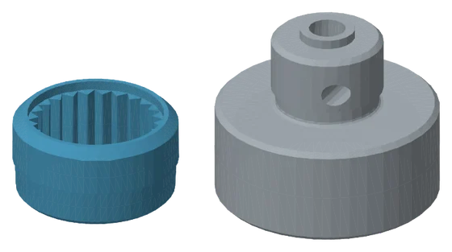
Ridged sleeve and broad round base. Radial clearance 0.78 mm.
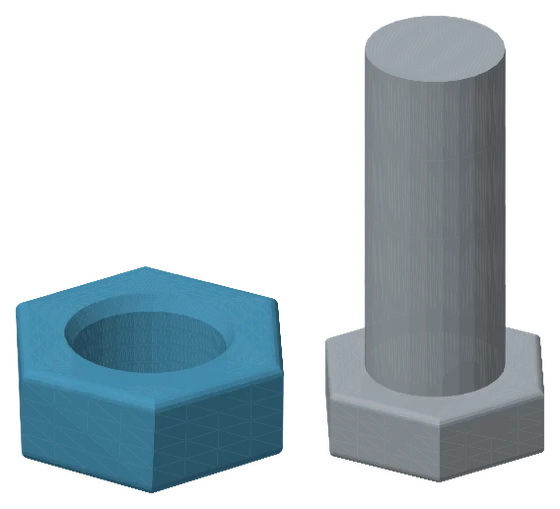
Hexagonal nut and short post. Radial clearance 1.19 mm.
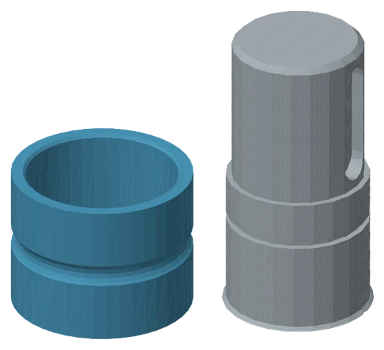
Smooth sleeve and stepped cylinder. Radial clearance 2.83 mm.
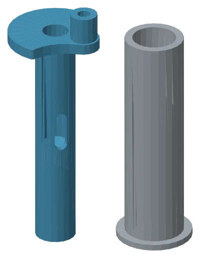
Long pin and hollow tube. Radial clearance 0.74 mm, the tightest of the four.
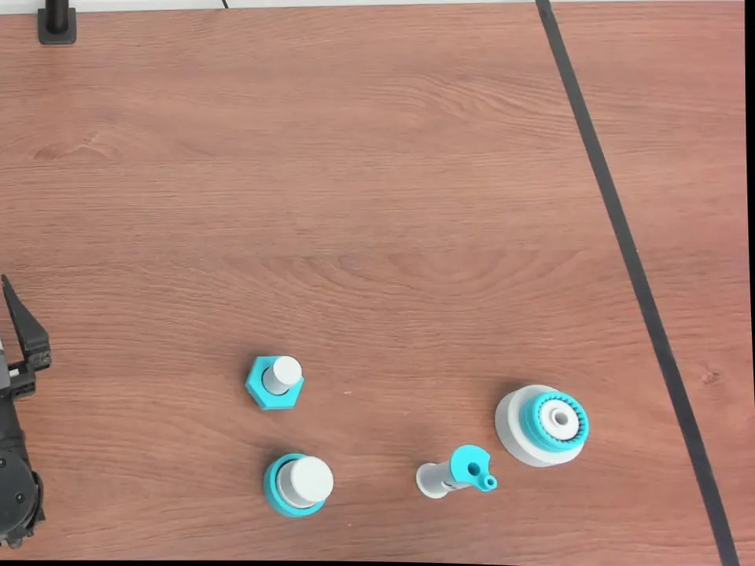
Trial 5 of 5, final state at 78 minutes: all four pairs assembled, gripper open, arm withdrawn.
Trial 1, the fastest at 38.6 minutes, assembled the pairs out of the demonstrated order, so it is not used here as the example of following the video.
The agent gets six cubes on a table and a single photograph of the structure it should build. It has to work out which cube is which, how they support each other, and an order of placements that keeps the partial structure standing. Three goal structures were evaluated with five trials each: a pyramid with three blue cubes in the base, two grey cubes bridging the base seams and one grey cube at the peak; two towers whose colour orders run blue, grey, blue and grey, blue, grey from the bottom; and a six block tower alternating grey and blue above a grey base that stays where it is.
Success criterionSuccess requires the complete target structure, still standing after the gripper opens and the arm withdraws.
Pyramid 5 of 5 at a mean 22.8 minutes, two towers 5 of 5 at 21.4 minutes, six block tower 4 of 5 at 34.7 minutes. That is 14 of 15 block trials.
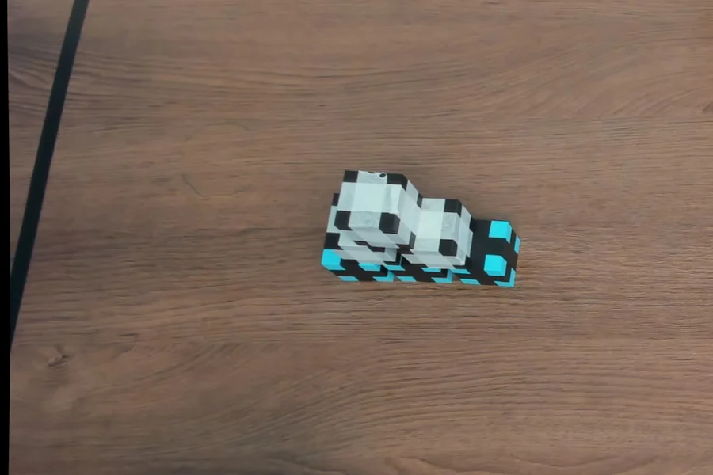
The goal image for the pyramid.
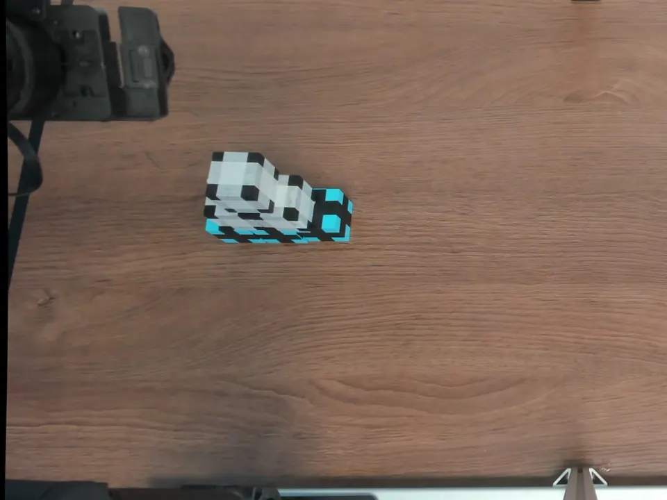
Pyramid, trial 4 of 5, final state after the arm withdrew.
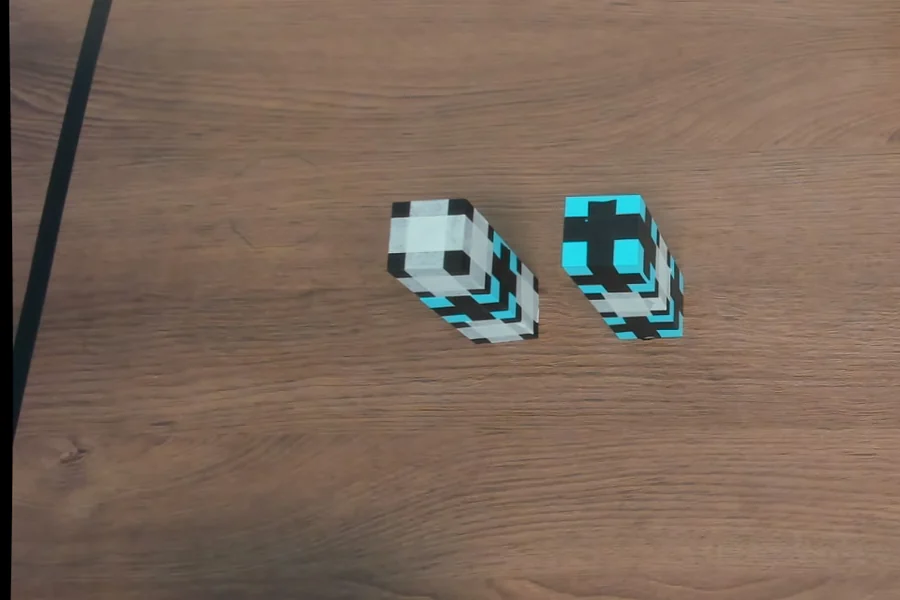
The goal image for the two towers.
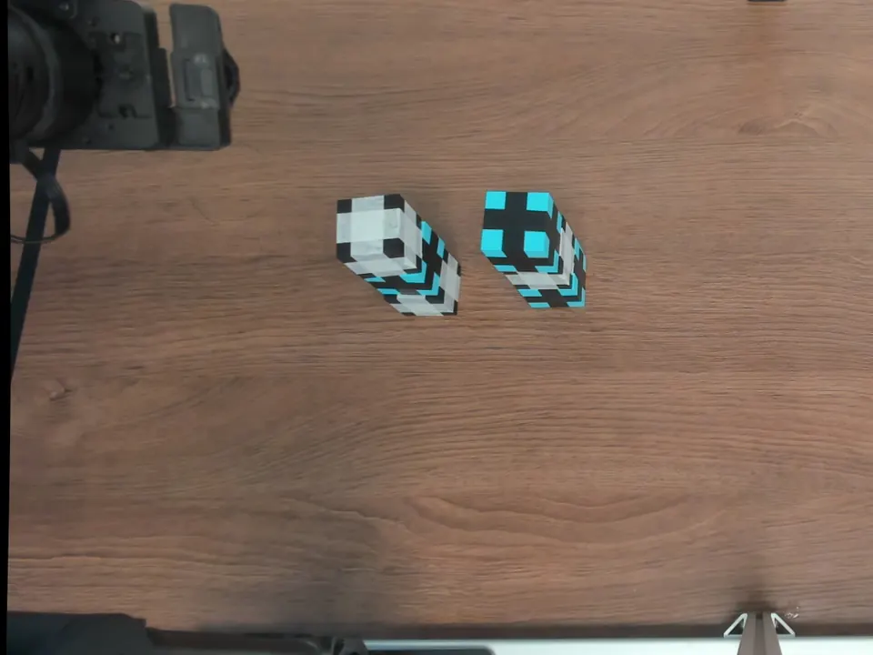
Two towers, trial 3 of 5, final state.
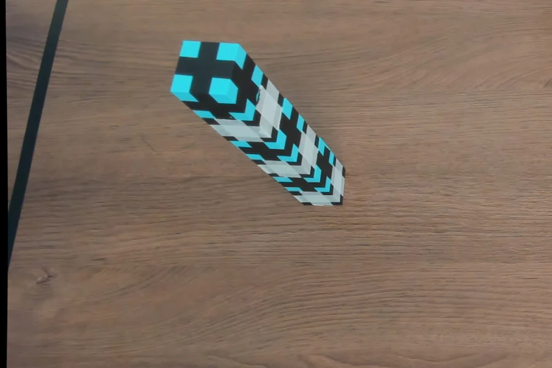
The goal image for the six block tower.
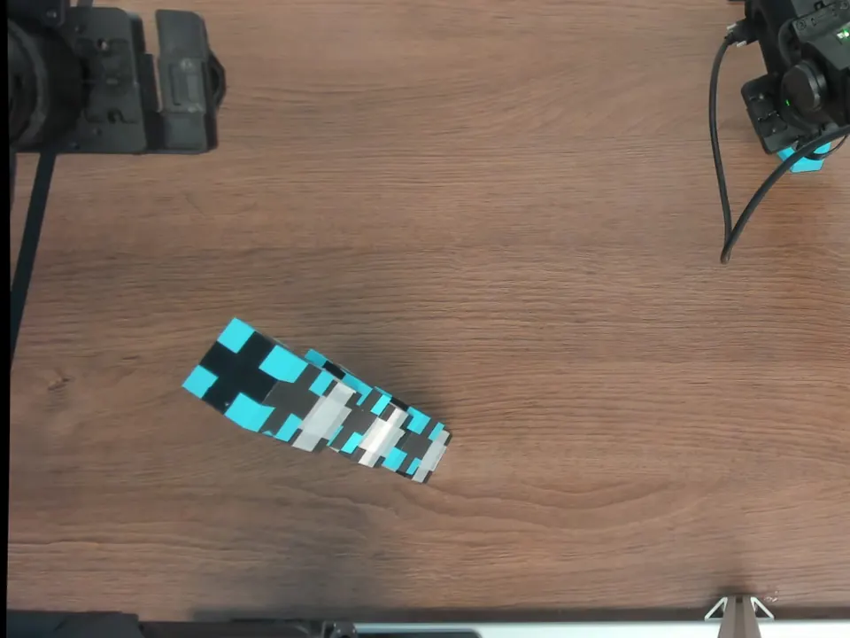
Six block tower, trial 3 of 5, final state.
The one six block failure is trial 2 of 5, which appears in the failure section below.
Six dice lie on the table with different faces upward. The agent receives a language instruction to turn them so that the upward face matches the goal, together with a goal photograph that fixes which face that is. The initial and target faces are balanced across predefined conditions. Nothing restricts where the dice end up or how they are rotated in the table plane, so the agent has to choose a grasp for each die that makes the required rotation reachable, and then release it so that it settles on the intended face.
Success criterionSuccess requires all six dice to show the requested number after placement. Positions and in-plane rotations are free.
5 of 5 trials succeeded, at a mean 42.9 minutes, ranging from 22.6 to 56.0, at an average of 18,460 thousand tokens and USD 22.52.
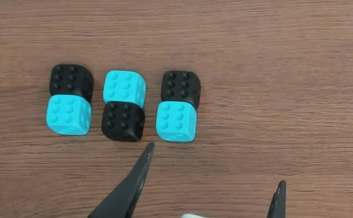
The goal photograph supplied with the instruction: three black and three light blue dice, six pips upward.
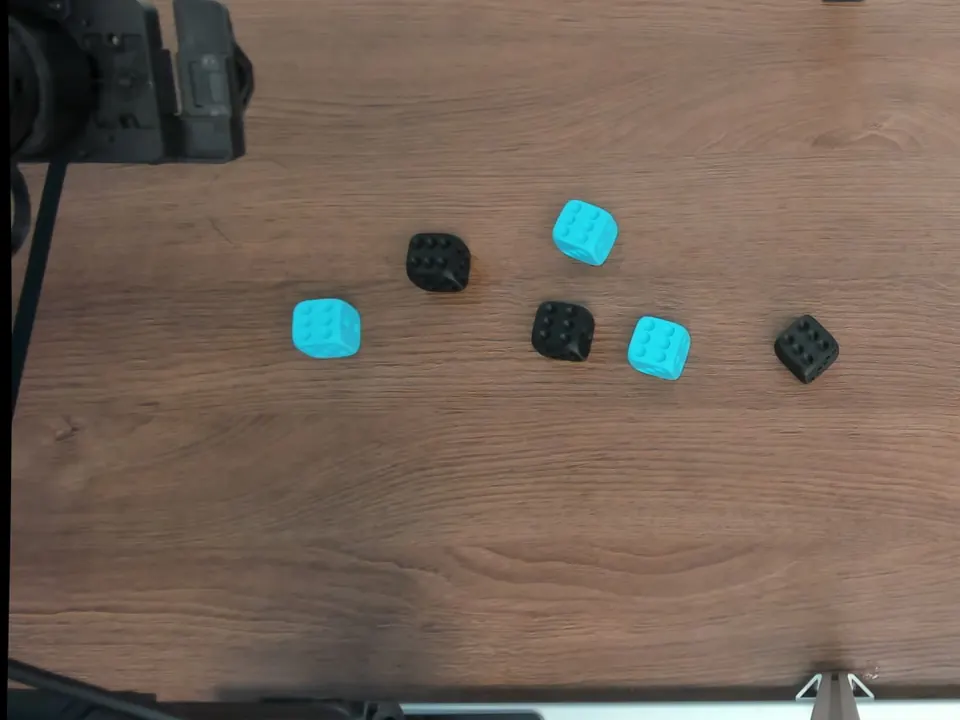
Die flipping, trial 1 of 5, final state after the arm withdrew.
The paper labels this a language instruction task. The agent also receives the goal photograph, which is how the requested face is specified, and the page says so on both.
A language instruction asks the agent to pick up a potato-shaped object and throw it into a stationary bowl. The required motion is a circular swing driven by one joint, with the other five joint targets held fixed and the gripper opening during the swing, so the outcome depends on the relationship between arm motion and release timing. This configuration uses a separate runtime with timed motion programs: the agent specifies joint offsets at time knots and a schedule for the gripper, and the executor interpolates the commands on a 50 Hz grid.
Success criterionSuccess requires the object to separate from the moving hand, travel through the air, and come to rest inside the target region, which here is the bowl.
Two recorded sessions, both successful, at a mean 22.8 minutes, from 22.2 to 23.3, at an average of 6,256 thousand tokens and USD 8.94. The throw itself completes an average of 13.9 minutes after the task is delivered, so about 40% of that time is the analysis and verification that follow it.
This is the smallest sample on the page. The paper prints this row as 2/2 in the same column as every other row, but its two sessions were selected rather than drawn from a planned batch, so this page treats the row as a recorded case and not as a success rate. Occlusion leaves the rising part of the flight and the apex unresolved, so the page says the object was released during the swing and came to rest in the bowl, and does not claim a measured trajectory.
An image the agent made for itself: eight wrist frames around the release, labelled with the time since the motion program was dispatched. Trial 2 of 2.
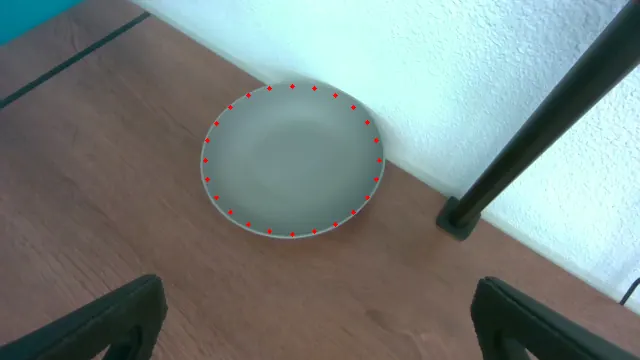
Another agent-made image from the same trial: the wrist view with the fitted bowl rim drawn on top, used to place the target before the swing.
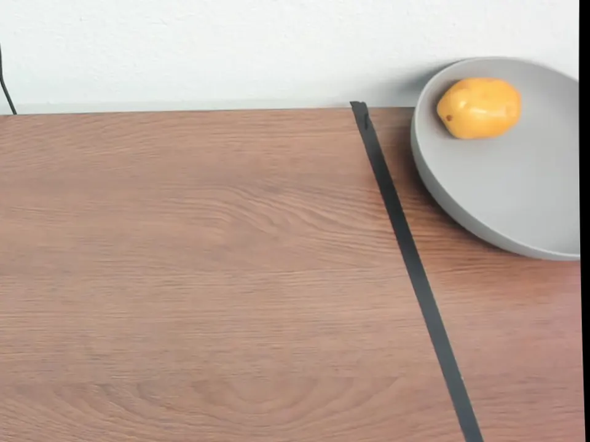
Trial 1 of 2, right arm, 22.2 minutes: the object at rest inside the bowl.
Two arms share one coordinate frame, and the agent decides how to use them. It watches an overhead demonstration video and reproduces the folds: first the near long edge onto the far long edge, to make a doubled strip, and then both short ends inward. Two configurations were evaluated with five trials each. In sequential folding the demonstration folds the right short end first and then the left. In simultaneous folding the demonstration brings both short ends inward together. The agent chooses the grasp points, which arm does what and when, and may stage a placement to keep the arms clear of each other. The towel is deformable, so the shape it grasps is not the shape it planned for.
Success criterionSuccess requires both inward folds with reasonably aligned edges, verified in an overhead image after both grippers open and both arms withdraw. Small wrinkles and creases are allowed, and the final position on the table is not restricted.
Sequential 5 of 5, at a mean 50.8 minutes and USD 24.14, among the highest in the suite. Simultaneous 3 of 5, at a mean 21.4 minutes and USD 7.46, the lowest success rate of the eight configurations.
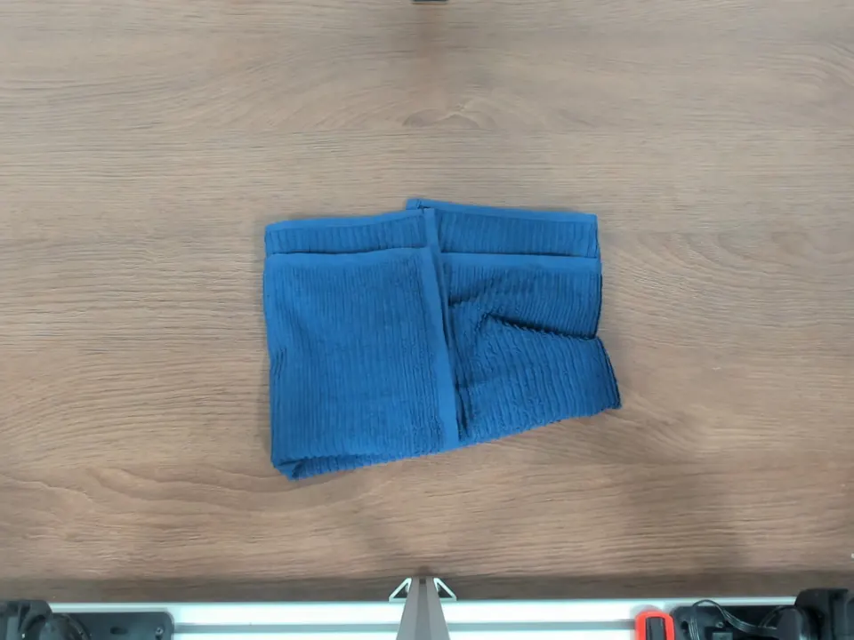
Sequential folding, trial 5 of 5, final overhead image after both arms withdrew.
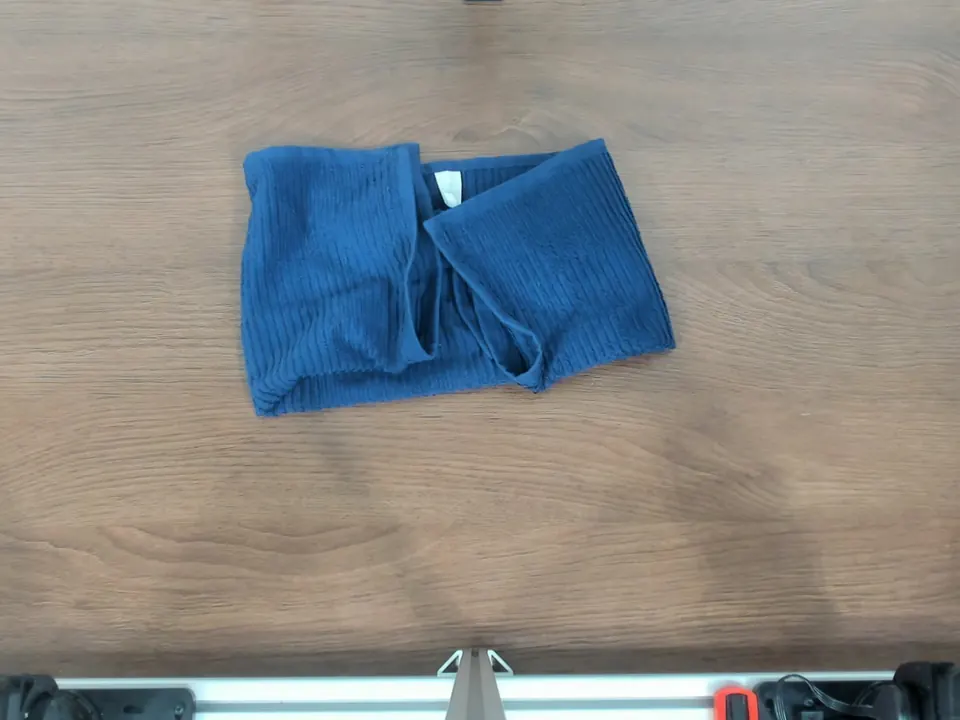
Simultaneous folding, trial 5 of 5, final overhead image. Counted as a success. The right flap keeps some skew and a curled inner edge, and there is a gap near the far side of the central seam.
The paper's own appendix describes the sequential example as a partial visual match: the fold order is complete, the left flap is flat after a correction, and the right flap keeps a visible buckle with the far edges offset. The page quotes that assessment rather than smoothing it over.
How a trial was run and judged
How a trial was run and judged
One agent, one session
Every trial starts a fresh agent session with the interface documentation, the task instructions, the reference media and an empty workspace. Model weights stay fixed. Solutions and logs from earlier trials are not supplied.
Default configuration
GPT-6 Astra at high thinking effort, inside Codex CLI, for every Table 1 row.
Fixed start
Each trial begins from a documented physical reset and an initial scene drawn from a predefined set of placements. Model and experience comparisons use matched scenes with counterbalanced order.
Budgets
Each task has a fixed wall-clock budget and a fixed budget for observation and action requests, shared across configurations. Recovery inside those budgets is allowed.
What ends a trial
The agent reporting completion, the budget running out, or a reset or human intervention. A reset or intervention ends the autonomous trial. Physical failure, budget exhaustion, intervention and infrastructure interruption are recorded separately.
What counts as success
The physical outcome and the execution video, judged against criteria fixed before evaluation. The required assembly, support, orientation and fold relationships have to survive gripper release and arm withdrawal.
Completion time
Measured from the delivery of the task and its references to the final physical verification. It includes reference processing, model calls, local computation, sensing, motion and recovery. Time is reported over successful trials only, so a configuration with no successful trial has no time.
Tokens and cost
Tokens are the sum of input and output usage across every model request in the trial, including reasoning and retries, reported in thousands. Repeatedly submitted context is counted on each request, and cached input counts once inside that request's input total. Cost uses standard API rates with cached input priced as cached.
What is not reported
The paper describes 95% Wilson confidence intervals and partial-completion diagnostics but does not report them, and this page does not invent them.
† Throwing time includes the trajectory analysis and verification that follow the throw. The throw itself completes an average of 13.9 minutes after the task is delivered, so roughly 40% of the reported 22.8 minutes comes after the object has landed.
What the capability column means
Long horizon reasoning (Long horizon)
the trial runs many steps and earlier progress has to survive later ones
Action diversity (Action variety)
the motion itself has to change, through grasp-dependent reorientation or a timed release
Object diversity (Object variety)
the object deforms, so the shape grasped is not the shape planned for
Reading the table
Success is the number of completely successful trials over the number of evaluated trials. Partial completion does not count.
Time, tokens and cost summarise the successful trials of each configuration, so a row with four successes averages four trials, not five.
Taken together the eight rows hold 33 successes in 37 trials. The paper does not state that total; it is derived here from the same per-trial records.
Table view
Table 1, per trial: the data plotted in the figure above.
Configuration
Success
Time (min), mean [min, max]
Tokens (k), mean [min, max]
Cost (USD), mean [min, max]
Per-trial completion time (min)
Four pair assembly
4/5
54.3 [38.6, 78.2]
22 255 [12 838, 42 988]
27.41 [16.92, 49.88]
38.6, 53.0, 89.2 (failed), 47.2, 78.2
Block construction · pyramid
5/5
22.8 [14.9, 32.2]
9 069 [6 267, 12 937]
11.56 [8.01, 15.28]
16.8, 23.2, 26.9, 14.9, 32.2
Block construction · two towers
5/5
21.4 [14.8, 29.2]
8 332 [4 944, 14 390]
10.28 [6.27, 16.85]
21.0, 19.4, 14.8, 22.6, 29.2
Block construction · six block tower
4/5
34.7 [17.3, 55.0]
13 111 [5 086, 19 846]
17.35 [6.69, 26.78]
46.4, 35.6 (failed), 20.1, 17.3, 55.0
Die flipping
5/5
42.9 [22.6, 56.0]
18 460 [10 158, 25 000]
22.52 [12.57, 31.20]
36.4, 56.0, 47.9, 51.4, 22.6
Targeted throwing · potato
2/2
22.8 [22.2, 23.3]
6 256 [6 254, 6 257]
8.94 [8.71, 9.18]
22.2, 23.3
Towel folding · sequential
5/5
50.8 [33.8, 63.3]
18 123 [10 126, 25 262]
24.14 [14.16, 30.90]
61.6, 50.7, 44.6, 63.3, 33.8
Towel folding · simultaneous
3/5
21.4 [15.7, 31.2]
5 055 [4 270, 5 684]
7.46 [6.16, 8.67]
14.0 (failed), 15.7, 27.6 (failed), 31.2, 17.4
Means, minima and maxima are over successful trials only, matching Table 1 of the paper.
Source: the paper's per-trial completion time, token usage and cost table for all 37 Table 1 trials.
One mark per trial for each configuration, successes filled and failures hollow, with the trial index beneath. The strips carry the same 37 trials as the table.
How AGP works
The loop
Observe
The agent asks the robot for an overhead image, a wrist image with aligned depth, or the current joint and end effector state. Captures arrive with calibration and timestamps and are saved into the agent's own workspace.
Write a program
The agent writes Python during the run to read those files: measure a part from depth, fit a surface, intersect a camera ray with a plane, triangulate a point seen from two views, or compose several robot calls into one step.
Command motion
The agent submits a target: either joint angles or an end effector position and orientation, plus a separate gripper opening. The robot runtime turns the target into joint trajectories under workspace and motion limits, using Mink for inverse kinematics.
Check
Each motion returns the measured state and the arrival error. The agent takes a new image when it wants one, and decides for itself whether the physical result matches its estimate.
Revise
A failed insertion can prompt a closer look, a new alignment estimate, or a different approach direction. The agent keeps going until it reports completion or ends the attempt inside the trial budget.
What the agent gets
A task specification: a human demonstration video, a goal photograph, a language instruction, or a combination, plus reference materials and completion criteria.
A documented robot interface with seven commands: state, status, help, frames, move_ee, move_joints and gripper.
A writable workspace where it can save images, scripts and notes for the duration of the trial.
Fixed budgets for elapsed time and for observation and action requests.
What the agent does not get
No task-specific or environment-specific training, and no simulation rehearsal.
No learned motion policy or skill library underneath it. The agent computes its own targets.
No solutions or logs from earlier trials, except in the experience studies, which are recorded separately.
No teleoperation. A reset or a human intervention ends the autonomous trial.
The platform
The robot is an I2RT YAM arm with six revolute joints and a parallel gripper over a tabletop workspace. A wrist-mounted Intel RealSense D405 supplies aligned colour and depth at 640 by 360 pixels, and a fixed overhead Logitech BRIO supplies rectified colour at 1920 by 1080. Bimanual towel folding adds a second arm expressed in the first arm's coordinate frame. Targeted throwing uses a separate runtime with timed motion programs, so that the swing and the gripper release can be scheduled together.
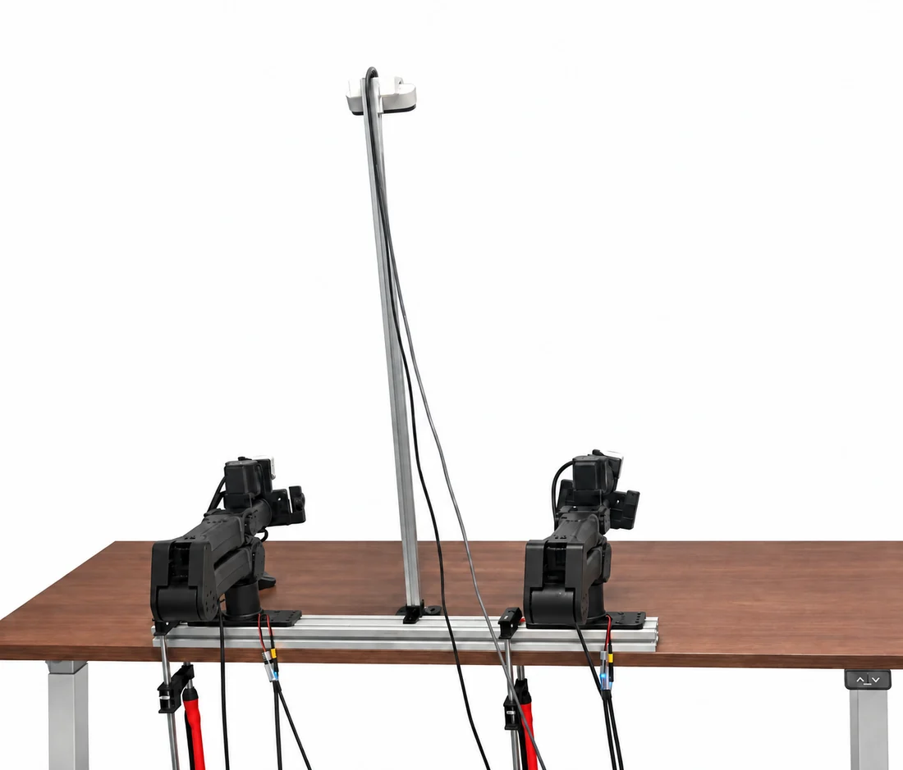
The tabletop station: two I2RT YAM arms on a shared rail, each with a parallel gripper and a wrist camera, under one fixed overhead camera.
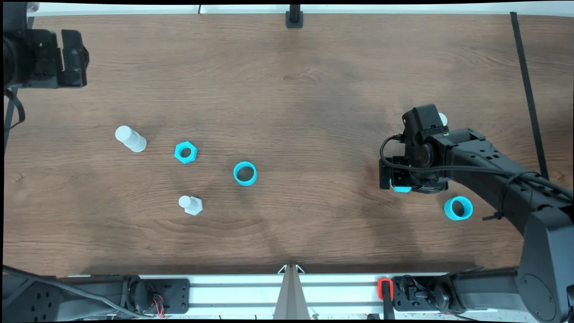
What the agent sees from overhead: the first 1920 by 1080 capture of the two pair assembly trial replayed below, second by second.
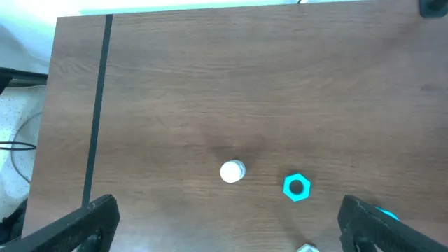
What the agent sees from the wrist: the 640 by 360 colour frame returned by the same request, with depth aligned to it. The agent asks for both views at once and reads them together.
Agent self-report and human review
Most trials end with a report written by the agent, and every trial has a separate review of the final state and the execution video by a person. Four of the 87 counted runs ended with no report at all, so on those there is nothing on the agent's side to compare. Where both exist they can differ. On this page a disagreement means the agent stated an outcome that the review contradicted: the agent called a trial successful and the review called it a failure, or the other way round. Trials whose report could not be classified automatically are counted apart, under a label of their own, because that is a limit of the parser and not a judgement by the agent. The per-trial file published below carries both fields for every trial, plus a label saying which of the four cases applies, so the counts on this page can be re-derived exactly.
The pin that was never found
Four pair assembly, trial 3 of 5. GPT-6 Astra at high thinking effort, Codex CLI, right arm. 89.2 minutes, ended at the timeout.
Three pairs went together. The hollow tube was knocked over and stood back up twice. On the final insertion the gripper was already partly open when the arm moved, the long pin left the jaws, and the agent could not locate it again. It stopped and reported the failure rather than claiming the task was done.
Agent report: failure. Human review: failure. They agree.
Six cubes standing, then not
Six block tower, trial 2 of 5. GPT-6 Astra high, Codex CLI, left arm. 35.6 minutes.
The fourth cube went down out of alignment, and the agent regrasped and corrected it while the stack was still intact. The sixth level was beyond a straight-down reach, so it built the top two cubes on the table and carried them up as a pair. All six stood after release. The tower came down during the withdrawal that followed. The agent then measured where the cubes had landed, found one grey cube at about 0.70 m in the robot base frame against a 0.65 m radial grasp limit, and ended the attempt as unsuccessful with time and command budget still left.
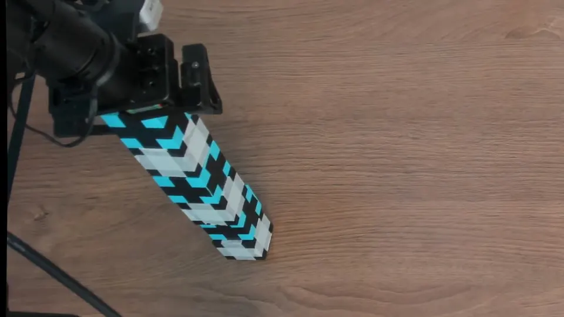
All six cubes standing after release.
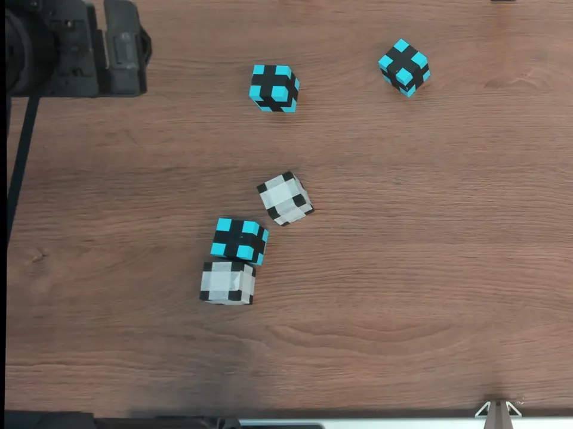
The same scene after the arm withdrew.
Agent report: failure. Human review: failure. They agree.
This is why withdrawal counts as part of the task, and it is also where recovery stops: reobservation and regrasping fixed the earlier alignment error, but they could not reach a cube that had left the workspace.
One corner that stayed unfolded
Simultaneous towel folding, trial 3 of 5. GPT-6 Astra high, Codex CLI, both arms. 27.6 minutes.
The agent carried both short ends inward at the same time and staged the placements, which is what the demonstration asks for. Repeated corner slips earlier in the run, and a curled long-edge fold, left a loose triangular corner that is plain in the final overhead image.
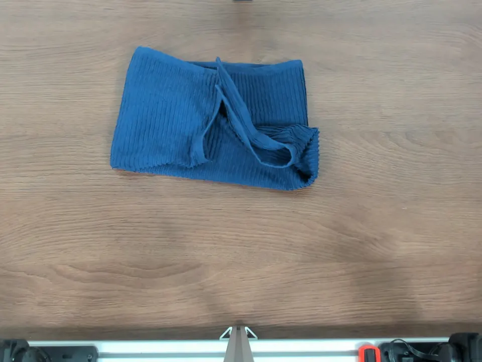
Trial 3 of 5, counted as a failure.Trial 5 of 5, counted as a success, for comparison.
Agent report: an approximate or partial match. Human review: failure. This is a difference of degree rather than a contradiction, and the trial is counted as a failure.
A smaller model that knows when to stop
Two pair assembly, GPT-5.6 Terra at high thinking effort, Codex CLI, left arm, trial 2 of 5. 22.1 minutes.
The circular pair went together. On the second pair the hexagonal ring slipped and knocked its post out of reach near the base of the arm. The agent tried to recover, could not, and reported partial success rather than success.
Agent report: partial success, not task success. Human review: failure. Table 2 counts it as a failure.
Across all 87 counted slots
1trial where the agent stated an outcome the review contradicted
9reports the fixed parser could not classify, which is a limit of the parser and not a disagreement
4runs that ended without a final report
In the agent's own words
The main fold order was attempted correctly, but the final flaps are skewed, unevenly overlapped, and not reasonably aligned. Success: no.
Towel folding, sequential, trial 4 of 5. The review counted this trial a success; the agent counted it a failure.
The page states two counts and the downloadable file reproduces both: how many trials carry an explicit disagreement between the agent's stated outcome and the human review, and how many reports the automatic parser could not classify. The second group is much the larger of the two, and it is not evidence of disagreement.
Programs the agent wrote while the task was running
The paper's appendix counts, across 65 recorded executions, 37 Python working files the sessions kept from a run, across 18 sessions: 29 for perception and geometry, 7 for composing robot calls, and 1 for drawing reference points into an image. The logs hold a further 135 shell events with inline Python across 48 sessions. One case can be followed all the way from a camera image to a physical motion.
From a wrist image to a commanded pose, and back again
The input
A wrist depth image of a pin held in the gripper.
The program
The agent wrote a script that samples triples of points to find a planar surface, then takes a singular value decomposition to get its normal.
The extension
It extended the same script to intersect an overhead pixel ray with that plane, estimate the tip of the pin from an assumed length, and express the tip offset in the gripper frame. A further extension computed a corrected target orientation and position.
The command
The program produced a horizontal target of roughly 0.51325 by -0.15820 metres. The next motion request used 0.5133 by -0.1582 metres with the computed quaternion.
The answer
That request came back with an arrival error. The agent adjusted the requested position and carried on with the insertion.
In the agent's own words
The four lines at the centre of the fit, as the agent wrote them, with the statements split onto separate lines:
ctr = best.mean(0)
_, _, v = np.linalg.svd(best - ctr)
normal = v[-1]
normal *= np.sign(normal[2])
In another assembly run the agent wrote a triangulation script that turns a wrist pixel and an overhead pixel into calibrated rays in the robot base frame, returns the midpoint of their closest approach as the position estimate, and returns their separation as a consistency check. The accuracy of that estimate still depends on the pixel correspondences the agent chose and on the calibration.
This case comes from a four pair assembly run under a reduced interface that is not one of the five counted trials. It is shown because it is the one place where a program's output, the request it produced, the error that came back and the correction can all be followed in the record.
Text only in v1. This section shipped no clip and no agent-made images: the one clip that illustrated it came from a run that is not one of the counted trials, and the four overlay images it would have shown do not exist yet. The record itself is quoted above.
What the programs contribute to performance is not established. Settling that would need comparisons that hold the interface capabilities and the inherited experience fixed.
A different arm and a five-finger hand
One recorded demonstration on other hardware: a seven-joint P7 arm with a RealHand L6 dexterous hand in place of the six-joint arm and parallel gripper. The hand has five fingers and six control channels, covering thumb flexion, thumb abduction and one channel for each remaining finger. Observations come from a fixed overhead RealSense D435i and a wrist-mounted RealSense D435, both colour streams at 640 by 480 pixels and 15 Hz. The task is to pick a bottle off the table. The same observe, program, command, check loop drives it; what changes is the arm kinematics and the number of things the end effector can be told to do.
Text only in v1. No clip and no photograph of this station ship with the page; the paragraph above is the whole of what is claimed.
This is qualitative evidence of one grasp and lift, and nothing more. The paper reports no token or cost figures for it and does not name the model. The bottle slips during the holding that follows the lift, and this paragraph is the only place the page says so.
How this differs from earlier work
Two families of systems already put a language model next to a robot. In the first, the agent writes a program in advance, as code or as a computation graph, and the robot runs that program during execution; every runtime decision has to be expressed as a rule written before the uncertain observation arrives. In the second, the agent orchestrates learned skills or vision language action policies, choosing what runs next from the goal and from execution feedback, while motion generation stays inside whatever policy was selected. AGP keeps the agent itself in the decision loop for the whole task: it chooses what to look at, writes and rewrites programs while the task runs, computes its own motion targets, and changes approach after a physical result, with no separately trained action policy underneath. The paper positions this against classical geometric modelling with task and motion planning, against learned visuomotor and vision language action policies, and against the wider agent literature on tool use, memory and reflection, and treats those agent mechanisms as things that move the policy boundary rather than as separate machinery.
Closest prior systems
Code as PoliciesLiang et al., 2022. arXiv:2209.07753Language model programs written for embodied control.
ProgPromptSingh et al., 2022. arXiv:2209.11302Situated robot task plans generated as programs.
ASPIRELu et al., 2026. arXiv:2607.00272Programs and computation graphs refined from execution evidence.
SayCanAhn et al., 2022. arXiv:2204.01691A language model selecting among learned skills by affordance.
Inner MonologueHuang et al., 2022. arXiv:2207.05608Replanning from environment feedback in language.
Diffusion PolicyChi et al., 2023. arXiv:2303.04137Visuomotor policies learned from robot trajectory data.
RT-2Brohan et al., 2023. arXiv:2307.15818Vision language action models conditioned on image and language.
OpenVLAKim et al., 2024. arXiv:2406.09246An open vision language action model.
pi-zeroBlack et al., 2024. arXiv:2410.24164A vision language action flow model for general robot control.
Compiled by the authors from the paper's related work section. The build does not check this list: the pinned snapshot holds the abstract, the introduction and the experiments, not the related work.
Limitations
What the paper says
Time and money. Mean completion time per successful trial runs from 21.4 to 54.3 minutes and mean inference cost from USD 7.46 to USD 27.41. Both are real barriers to deployment.
Coordinated deformable manipulation is the weakest case. Simultaneous towel folding is the lowest configuration at 3 of 5, and sequential folding costs 50.8 minutes and USD 24.14 on average.
Cost and time grow with task complexity, as the six block tower shows against the pyramid and the two towers, and a large share of the overhead is reviewing and verifying outcomes. About 40% of the throwing time comes after the throw.
Image-conditioned decision cycles take a large share of elapsed time, with perception, planning and code generation coupled inside single model responses. There is substantial room to cut observation and decision overhead and the cost of writing and transferring experience.
Model choice matters. On the same two pair assembly task, GPT-5.6 Terra reaches 1 of 5, GPT-5.6 Luna 0 of 5 and Claude Fable 5.1 3 of 5.
Experience reuse helps some tasks more than others. Two pair assembly shows limited gains in task time, and the ring study is one dependent sequence with no matched empty-experience control, so it cannot isolate a causal benefit.
Experience transfer rests on very few successful trials, which limits how much weight the conclusion can carry.
Recovery has limits. Withdrawal is part of the task: a tower that collapsed while the arm moved clear pushed one cube past the 0.65 m reach limit, and it could not be rebuilt.
What the agent-written programs contribute is not established, and would need comparisons controlling interface capabilities and inherited experience.
The throwing evidence is two sessions, and occlusion leaves the rising part of the flight and the apex unresolved.
The cross-embodiment evidence is qualitative: a grasp and a lift, followed by a slip during holding.
Safety. Inaccurate perception, faulty programs and inappropriate motion requests can damage equipment or injure people. This implementation separates the agent's reasoning from motion execution and enforces workspace and motion limits in the robot runtime. Working near people or in unfamiliar environments would need further safety evaluation, supervision and independent protective mechanisms.
Samples are small: five trials per configuration, two for potato throwing. The paper describes 95% Wilson confidence intervals but does not report them.
What this page does not show
Almost every clip is sped up, because the arm is stationary for most of a trial. Each clip carries its speed-up and the real elapsed time, and one whole run is published uncut at 1x on the watch page.
Clips are cut. Where a clip skips a stretch of the run, the caption gives the amount, or the clip carries an on-screen card that gives it.
Video is cropped for privacy and for legibility. Cropping removes parts of the lab and, in several runs, a second arm running an unrelated trial at the same time.
Showcase trials were chosen for what they illustrate, not sampled at random. Every caption states which trial of how many, the failures have their own section, and the trial browser lists all 87 counted slots. Several showcase clips deliberately use a trial near the middle of its row rather than the best one.
The supplementary comparison of two coding agents on pyramid construction is reported in the paper but not shown here.
Times, tokens and costs are the paper's own accounting. They are not a measurement of what the same task would cost on other hardware or at other prices.
Data and methods
Everything on this page is generated from a pinned copy of the paper's own per-trial records. The build compares what it renders against the paper and refuses to publish on a mismatch.
Per-trial records (CSV)
All 87 counted trial slots, 37 plus 40 plus 10: task, configuration, trial index, audited outcome, the agent's stated outcome, a label saying how confidently that outcome could be classified, model, harness, arm, completion time, tokens and cost.
Trial by trial, what each success count rests on, and which entries are recorded by the authors rather than derived from a usage file. Confirmed by Yang Lin, the author who ran the trials, in a single decision on 11 September 2026 covering all four entries.
Numbers are computed at full precision and rounded once, when they are drawn. Rounding the per-trial values first changes three cells of the main results table, so the build does not do that.
The build machine-checks the time, token and cost cells of both tables against the paper. Success counts are checked against the signed denominators file, because four of them rest on outcomes recorded by the authors rather than on a usage record: GPT-5.6 Terra, GPT-5.6 Luna and Claude Fable 5.1 in the model comparison, and the five GPT-6 Astra runs that built the experience store.
Every clip states its speed-up and the real elapsed time of the run it came from. Clips are cropped, and metadata including location data is stripped from every published file. Faces and identifiable people are not published; the source window of every clip is scanned for people before it ships. Yang Lin, the author who ran every experiment, went through the review package for all 28 clips, with their evidence sheets, recorded findings and captions, and approved the whole set for publication in a single decision on 11 September 2026.
Where the page quotes the agent, the text is the agent's own, edited only to remove file paths, host names and identifiers. Agent text is always marked as the agent's.
Page text and media are released under CC BY 4.0 unless a file says otherwise. The assembly part geometry is adapted from the AutoMate dataset and keeps its own terms.
Questions about the data or the page go to Mengzhao Jia at mjia2@nd.edu.
Cite this work
@article{jia2026agentaspolicy,
title = {Agent as Policy for Robotic Manipulation},
author = {Jia, Mengzhao and Lin, Yang and Zhang, Xixin and Zhang, Zhihan and Liu, Xiaobai and Jiang, Meng},
journal = {arXiv preprint, 2026},
year = {2026}
}
The arXiv identifier is not assigned yet, so the entry above cites the preprint by year.
Credits
Assembly part geometry
Adapted from the AutoMate dataset. Tang et al., AutoMate: Specialist and Generalist Assembly Policies over Diverse Geometries, 2024, arXiv:2407.08028. The parts on this page are 3D prints of those meshes, scaled with their aspect ratios preserved.
Robot arm
I2RT YAM arm and the I2RT robot software.
Inverse kinematics
Mink, by Kevin Zakka: Python inverse kinematics based on MuJoCo.
{kind=link}